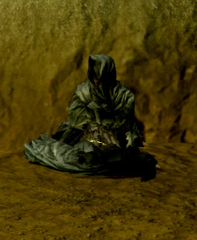
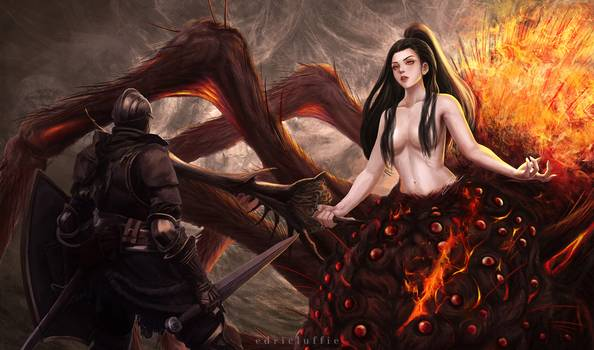
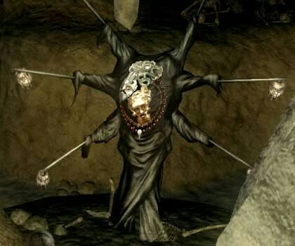

Summary
 Gwyn, the Lord of Sunlight The Nameless Firstborn Gwynevere, Princess of Sunlight Gwyndolin, the Dark Sun Kingseeker Frampt Dragonslayer Ornstein Hawkeye Gough Lord's Blade Ciaran
Gwyn, the Lord of Sunlight The Nameless Firstborn Gwynevere, Princess of Sunlight Gwyndolin, the Dark Sun Kingseeker Frampt Dragonslayer Ornstein Hawkeye Gough Lord's Blade Ciaran
Artorias the Abysswalker
Great Grey Wolf Sif
Alvina
Velka, Goddess of Sin
The Witch of Izalith
Quelana
Quelaag
The Fair Lady
Gravelord Nito
Pinwheel
Seath the Scaleless
Big Hat Logan
The Furtive Pygmy
The Four Kings
Darkstalker Kaathe
Manus, Father of the Abyss
Stone Dragon of Ash Lake
Black Dragon Kalameet
Solaire of Astora
Andre of Astora
Siegmeyer of Catarina
Sieglinde of Catarina
Laurentius of the Great
Swamp
Eingyi
Griggs of Vinheim
Blacksmith Rickert of Vinheim
Ingward, the Sealer
Princess Dusk of Oolacile
Patches the Hyena
Crossbreed Priscill
Marvelous Chester
Elizabeth
Characters
Gwyn, the Lord of Sunlight

Bearer of the strongest Lord Soul, Gwyn's power manifested as great spears of sunlight, which take the form of lightning. He founded the kingdom of Anor Londo, lead an army of his silver knights against the dragons, and was father to Gwynevere, Gwyndolin, and his disowned firstborn son(thought to be Sen, the ancient God of War). Gwyn was the first to link the First Flame, becoming a Lord of Cinder, and now mindlessly guards it against outside threats and serves as a test of strength for those seeking to link it again. Gwyn's crown is said to have once had some special power, but its power has long since faded and now only exudes a slight warmth by the time the player acquires it. Gwyn and his clan are referred to as gods. Whether this is by Gwyn's own command or simply a title given to them by others for their strength is unknown, though they are still the primary religious figures in many human kingdoms. Gwyn is one of the four who happened upon the Lord Souls at the dawn of the Age Of Fire, along with Gravelord Nito, The Witch of Izalith and The Furtive Pygmy.
The Nameless Firstborn

The first son of Gwyn, he committed some serious offense and was stricken from the annals of history. His story is not expanded upon in Dark Souls 1.
Gwynevere, Princess of Sunlight

The second daughter of Gwyn, and known as a goddess of fertility. The real Gwynevere married the flame god Flann and left Anor Londo long ago when the First Flame began to fade, but Gwyndolin created an illusion of her to maintain the image of power and stability in the kingdom. This illusion grants successful Undead the Lordvessel, and directs them to follow Kingseeker Frampt's advice and fill it with Lord Souls. Undead who ask can join the Princess Guard, knights of Gwynevere who grant aid to fellow Undead through the use of her miracles.
Gwyndolin, the Dark Sun

Youngest son of Gwyn, and the only god who stayed behind in Anor Londo. Gwyndolin has a deep adoration of the sun, and reveres his father, spending his time guarding Gwyn's tomb and orchestrating events alongside Kingseeker Frampt to delay the Age of Dark. Due to his strong connection to the moon and skill in its magic, he was raised as a daughter. Gwyndolin specializes in a form of sorcery that uses Faith instead of Intelligence, and he is capable of powerful illusions that are nearly indistinguishable from reality. In this way, he maintains the appearance of a thriving Anor Londo. In reality, the kingdom has long since been abandoned and experiences an endless night, and Gwyndolin and his Darkmoon Knights are the only ones who remain. Undead may join his company of knights if they wish, though any who dispell the illusion of Gwynevere or enter Gwyn's tomb are instead marked as irredeemable sinners and pursued by those same knights.
Kingseeker Frampt

One of the primordial serpents, Kingseeker Frampt finds Undead with the potential to be Lords, and directs them to link the First Flame, though he is not entirely forthwith and fails to mention that anyone who does will be trapped there, burning for an entire Age. Even so, linking the First Flame is necessary to prolong the Age of Fire and prevent an Age of Dark. Frampt will denounce the player and abandon them if they ever join Darkstalker Kaathe instead.
Dragonslayer Ornstein

Said to be the captain of Gwyn's four greatest knights. As with the other three, Ornstein was granted a fragment of Gwyn's soul for his service in the war against the dragons. He now guards the illusion of Gwynevere, serving as a test of strength to Undead who hope to link the First Flame. His accomplishments against the dragons are legendary, and his spear is said to have once split a boulder in two. He wields a cross spear infused with lightning, which uses leverage to penetrate dragon scales, let alone any normal human. Despite being a major figure in the story and even a boss in the game, not much is known about Ornstein beyond what could very well just be legends and hearsay.
Hawkeye Gough

A giant and a knight of Gwyn, Hawkeye Gough and his archers were known for using massive greatbows to shoot down flying dragons. Gough himself can fell a dragon with a single arrow the size of a tree. But the war is over, and Gough now spends his time carving archtree wood and imbuing it with spoken messages.
Lord's Blade Ciaran

One of Gwyn's assassins, and also one of the four knights. She is distinguished among the Lord's Blades, though it is never quite explained what exactly her accomplishments are. She is prejudiced against humans, but due to her respect for Artorias she tries to treat them fairly.
Artorias the Abysswalker

Legendary knight of Gwyn, known for his unbreakable will of steel and unmatched skill with greatswords. It is said that Artorias forged a pact with the beasts of the Abyss to fight against the Darkwraiths, but this is only a fabrication, as his true story was intentionally obscured and eventually forgotten. In reality, Artorias was defeated by the Abyss, and his efforts were carried on by a forgotten champion. This champion eventually defeated Manus, Father of the Abyss, successfully stalling the Abyss's growth for some time. Artorias was friends with Sif the Great Wolf and the cat Alvina, both of whom now defend his grave from those who hope to find the means to enter the Abyss.
Great Grey Wolf Sif

A towering wolf, and battle compatriot of Artorias. Legend holds that Artorias once traversed the Abyss to defeat the Darkwraiths, and his companion Sif now guards his grave to deter anyone who would try to enter the Abyss for their own means. If the player completed the Artorias of the Abyss DLC, Sif will recognize them, but this is still a mandatory fight and can't be avoided.
Alvina

Another ally of Knight Artorias, Alvina now leads a group of bandits to defend his grave. Any who approach the grave of Artorias in Darkroot Forest are attacked by her covenant, but players can join her covenant to also defend the grave from intruders and to allow free access to it.
Velka, Goddess of Sin

Velka is a black-haired witch and rogue goddess, though what this means is never explained. She keeps record of all sins committed by humans, and can absolve these sins for a price. She has some relation to crows, but what this means is not explained. Priests of Velka are called pardoners, and wander the lands taking confessions and absolving sins. Velka has two miracles in her name, Karmic Justice and Vow of Silence, and her hair can be fashioned into a talisman that draws strength from Intelligence instead of Faith. Miyazaki has said that the crow people in the Painted World of Ariamis are fervent followers of Velka, and became crow monsters in their devotion to her.
The Witch of Izalith

One of the four original Lord Soul bearers, her Lord Soul granted the power of fire. She is a witch and master of the now forgotten fire sorceries, and founded the city of Izalith with her daughters deep underground. When the First Flame began to fade, she attempted to create a second First Flame to replace it using her witchcraft and a special soul, but failed catastrophically and instead created the Flame of Chaos. The birth of Chaos marked the birth of demons, and its flame transformed the Witch of Izalith and all her daughters into demons barring Quelana, who escaped the destruction of her home. As the daughters of Izalith were the only practitioners of fire sorcery, it is now a forgotten art, but the creation of Chaos also created pyromancy as a byproduct. Gwyn waged war against the demons and eventually routed them, shackling the Bed of Chaos, their source of life, to contain them.
Quelana
One of the daughters of Izalith, and the only one who successfully escaped the destruction of her home. The end of Izalith marked the end of fire sorcery, but the creation of Chaos also marked the birth of pyromancy. Quelana adapted many old fire sorcery spells into pyromancy, then taught them to her pupil Salaman long ago, who then taught it to the outcasts who live in the Great Swamp. In teaching pyromancy, she hoped to teach people control over the flame to prevent another such disaster, while also preaching a message to fear the flame as it is inherently uncontrollable. Quelana is known to pre-date the Age of Fire, but by how much or even how at all is never explained.
Quelaag
One of the Daughters of Chaos, she fled Izalith with her sister, but was not able to escape before being transformed by the Flame of Chaos. She is now a demon, and has taken up residence near one of the two Bells of Awakening with her sister, the Fair Lady.
The Fair Lady

An unnamed Daugher of Chaos and a Firekeeper, she is pale and ill. Along with Quelaag, she fled the lost city of Izalith but still became a demon. The Fair Lady is afflicted by stillborn eggs, though unbeknownst to her each serves as a cradle for tiny Humanity sprites. She is tended to by her followers and members of her Chaos Servants covenant, who bring her the Humanity she needs. She is also a firekeeper, and mainand can assist an Undead by upgrading their Estus Flasks. She does not speak a language known by the player character, and can only be understood if they have the correct magic ring. Members of her covenant who offer her Humanity will be taught powerful pyromancies born from the Flame of Chaos, and can access the city of Izalith through a secret entrace. Her true name is unknown, and she isn't given a name even in the game's files.
Gravelord Nito

One of the four original Lord Soul bearers, Nito's soul grants power over death. Nito can inflict disease and decay, and animates skeletons to fight for him. Along with the other four original Lords, he played a major role in defeating the dragons and now holds dominion over an extended system of crypts and tombs where he watches over the dead. Nito leads a covenant, the Gravelord Servants, who use Eyes of Death to spread misfortune and curses, which produces more of the Eyes of Death Nito desires. Not much is known about him beyond this, though at one point a group of occultists tried to take a part of his Lord Soul in an attempt to slay the gods. More recently, the necromancer Pinwheel has been slowly draining Nito's power for his own use. Even despite all of this, Nito's Lord Soul remains strong enough to satiate the Lordvessel, and he is still a Lord in his own right.
Pinwheel
Necromancer of the Catacombs, he has been taking power from Nito's soul for his own ends. Pinwheel appears to have three heads and six arms, and concept art of him shows three separate bodies either stacked together or fused underneath his robe. Pinwheel himself is not especially powerful, and does not accomplish anything of note in the story. His three masks are each enchanted with special power, and will fortify the body of anyone wearing them.
Seath the Scaleless

Seath was born without the scales that make other dragons immortal. In his envy, he betrayed them and stole the primordial crystal, which granted him near complete invulnerability, if not an adequate imitation of immortality. After the war, he was given the title of Duke by Gwyn, a fragment of Gwyn's own soul, and a tower and archives to conduct his research in. Seath eventually codified a system of magic utilizing souls, and is known as the father of sorcery by the Dragon School of Vinheim which teaches it. Seath spent his time trying to find the secrets of immortality and produce scales for himself, but his research eventually drove him mad and his experiments became more and more deranged. By the time the game begins, he is sending his minions out to kidnap maidens and perform horrible atrocities on them, turning them into monsters. In his madness, he developed powerful sorceries based on a link between souls and crystals, the mere study of which is enough to drive other wizards equally insane. As with all dragons, his tail can be severed to find a special weapon: the Moonlight Greatsword, a non-physical blade that shoots, and is composed of, waves of moonlight.
Big Hat Logan

A famous sorcerer who once studied at the Vinheim Dragon School of sorcery, students of Seath's work. Logan is known for developing new and powerful sorceries, one of which is believed to be on par with Lord Gwyn's lightning. He eventually left the Dragon School, and traveled to Lordran when he became Undead over one hundred years ago, seeking Seath's legendary archives. Should he manage to reach it, Logan will study Seath's research and develop even more powerful crystal sorceries, but will eventually go mad when he recreates Seath's crystal breath as a spell.
The Furtive Pygmy

One of the orignal four Lords who waged war on the dragons, along with Gwyn, Nito, and the Witch of Izalith. Gwyn feared the Dark Soul the pygmy possessed, and all records of his or her existence and contributions to the war were stricken fron history. The pygmy is the ancestor of all Humanity, all of whom each bear a tiny piece of the Dark Soul.
The Four Kings

Rulers of New Londo, a city of Undead. They were granted fragments of Gwyn's Lord Soul in recognition of their skill as leaders, and peacefully ruled New Londo for a time. They eventually encountered Darkstalker Kaathe, who taught them the art of Lifedrain, and in joining him they and their knights became the Darkwraiths. The armor and weapons of their knights were twisted into a skeletal appearance, and the Four Kings themselves now reside in the Abyss and became things scarcely human. They and the Darkwraiths were eventually trapped within New Londo, which was flooded to contain them, though they are not yet dead.
Darkstalker Kaathe

One of the primordial serpents, Darkstalker Kaathe acts to end the Age of Fire and begin an Age of Dark. It is suspected that he is the one who tricked the people of Oolacile into reviving Manus, and in the game itself he argues that the player character should forsake the First Flame and become a Lord of Dark, ruling over an age of Humanity. His words are true, though much like Frampt he leaves out a lot of important details that might otherwise lead a person to think twice. Kaathe taught the art of Lifedrain to the Four Kings of New Londo, causing them and their knights to become corrupted by the Dark and giving rise to the Darkwraiths, Humanity-stealing Undead knights who are a threat to anything with a soul. The Darkwraiths now answer to Kaathe, and he commands them to go out and steal Humanity from their fellow Undead in the hopes that one among them will become powerful enough to qualify as a Dark Lord. Should the player side with Kaathe, Frampt will denounce them and leave, but should the player side with Frampt, Kaathe will never show himself in the first place.
Manus, Father of the Abyss

A primeval human, Manus was once a man but becomes a twisted abomination after being resurrected. His Humanity goes wild, and similarly mutates any other human it comesin contact with. He is a dark sorcerer of immense power, and wields the strength of the Abyss to bring the kingdom of Oolacile to its knees in short order, capturing the Princess Dusk. The Abyss spreads rapidly under his guidance, and while its spread is halted with his death, Gough notes that this is only a temporary measure. The knight Artorias attempts to stop him, but is defeated. Manus himself is warped beyond the ability to reason by his revival, and desperately seeks his precious pendant, which he never finds. He demonstrates the ability to reach beyond time and space, snatching at least two people from the future and dragging them back into the past.
Stone Dragon of Ash Lake

A descendant of the ancient dragons, and leader of a covenant of Undead who seek to become dragons themselves. The player can join a covenant with the Stone Dragon to receive items that partially transform them into a dragon. The Dragon Greatsword, a weapon imbued with the Stone Dragon's power, is found by cutting its tail. The dragon doesn't seem to mind, and doesn't become hostile to the player if they cut its tail.
Black Dragon Kalameet

An ancient and powerful dragon, and survivor of the war against dragons. Kalameet himself was above and beyond the other dragons in terms of strength, and Gwyn and the other Lords dared not to provoke his ire. Those who challenge Kalameet can expect a long and difficult fight, all for a cursed ring that makes its wearer take double damage from enemy attacks. As with all other dragons, Kalameet's tail can be severed to find the Obsidian Greatsword, a weapon imbued with his might.
Solaire of Astora

Knight Solaire is a follower of the Warriors of Sunlight covenant, and introduces the player to the game's co-op mechanics. Solaire worships the god Gwyn, and desires to find a sun of his own. Contrary to some theories, he is an ordinary human and his excessive power is only a result of training and dedication to his goal, as explained in the descriptions for his equipment. Solaire's questline has two ends: in one, he falls into despair and finds the Sunlight Maggot, a shining and parasitic demon that drives him insane. But if the player kills the Sunlight Maggot before he can find it, Solaire will instead recover from his despair and later offers his assistance against Gwyn, Lord of Cinder.
Andre of Astora

A blacksmith from Astora, trained in smithing weapons both mundane and divine. He can reinforce weapons to their maximum strength, or infuse them with divine power to gain bonus damage from Faith. Peculiarly, he has a unique model and is the only character whose mouth moves when speaking. The statues that hold divine embers share his model.
Siegmeyer of Catarina

A knight of Catarina, Siegmeyer came to Lordran when he became Undead. Siegmeyer is searching for adventure, and the player can find him in a variety of predicaments throughout the game. His questline is linked with his daughter Sieglinde, and both must be completed together.
Sieglinde of Catarina

Daughter of Siegmeyer, she is searching for her father to give him her mother's last words. If their questline is completed, she eventually finds him, but he has gone hollow. She resolves to kill him again and again until he can finally rest permanently.
Laurentius of the Great Swamp

A pyromancer from the Great Swamp, Laurentius was overjoyed when he became Undead, and journeyed to Lordran in the hopes that he might someday find the legendary witch Quelana, mother of pyromancy. He teaches the player basic pyromancy spells, and will give them a part of his own pyromancy flame if they don't already have one. If the player ever finds Quelana, they can tell him about her. He will leave to find her, but wanders lost through Blighttown and eventually goes hollow.
Eingyi

A servant of the Fair Lady, he tends to her and guards her against intruders. He bears parasitic eggs as a sign of devotion and sympathy for the Fair Lady's suffering. He was once a pyromancer from the Great Swamp, but was driven out for his perversions of the art of fire, which turned flame into clouds of poison and inflicted prolonged suffering upon others. Eingyi is skilled with pyromancy, and will share his knowledge with those who show as much devotion to the Fair Lady as he does.
Griggs of Vinheim

An admirer of Big Hat Logan, who hopes to study sorcery with him. Grigg's attire and equipment suggests he may in fact be one of Vinheim's spies, but whether he's following Logan under their orders or simply went his own way when he became Undead is not known.
Blacksmith Rickert of Vinheim

Another former student of Vinheim, Rickert is found locked in a cell near the upper edge of New Londo. Surprisingly, Rickert is in there willingly and stays because it's safe from the hollows. He is a talented mage-smith, and can imbue the player's weapons with magic, allowing them to gain bonus damage from Intelligence.
Ingward, the Sealer

One of three healers who devised a plan to contain the Darkwraiths by flooding New Londo, knowing that this would also cause the deaths of countless innocents. The three swore to remain and watch over the city, and wear distinctive masks as a symbol of their oath, but by the time the game starts Ingward is the only one who remains. Ingward himself knows sorcery that can cure curses, a power said to be on par with divine acts. The corpse and spell of the second sealer can be found in Blighttown, and their poison-curing sorcery may suggest that they were trying to relieve the suffering there. The final sealer is found with Lautrec in Anor Londo, though they no longer wear their mask which suggests they may have forsaken their oath.
Princess Dusk of Oolacile

The princess of the human kingdom of Oolacile, Dusk is trapped in one of Seath's crystal golems when the player finds her. She owes the player character a debt of gratitude, and offers to teach them the sorceries of her kingdom before she fades back to her natural time. The player can then use her sign to summon her and learn the long forgotten light-based spells of Oolacile. As the events of the game progress, she is eventually captured by the resurrected Manus, who then pulls the player character into the past when they try to investigate.
Patches the Hyena

Patches is a wandering merchant, travelling the world and selling his wares. He is known for tricking people and luring them into death traps, then looting their corpses for trinkets to sell. If the player forgives him for this, he will eventually offer to sell his wares to them as well. Patches holds a great disdain for clerics, and will never make peace if the player is one.
Crossbreed Priscilla

A half-dragon hybrid. Priscilla was a forlorn outcast, feared by the gods for her power of lifehunt, and eventually found her way to the Painted World of Ariamis. Her weapons are imbued with the power of lifehunt, which causes heavy bleeding in living things. She is not initially hostile, and simply asks the player to return to their own world when first encountered. As with other dragons, her tail can be cut to find a special weapon.
The Gaping Dragon

A descendant of the ancient dragons, the Gaping Dragon was consumed by gluttony and slowly transformed into a giant mouth. It attacks the player relentlessly in its hunger, and must be killed because it ate the key to Blighttown. Cutting off its tail will give the Dragon King Greataxe, a weapon imbued with the Gaping Dragon's strength.
Marvelous Chester

A man of mystery snatched from the future by Manu and Stranded in the Past in Oolacile. He can serve as a merchant.
Elizabeth

A Giant Mushroom, who is guardian to the sanctuary in Oolacile and Godmother to Princess Dusk. She is the source of the Legend of the Abysswalker.